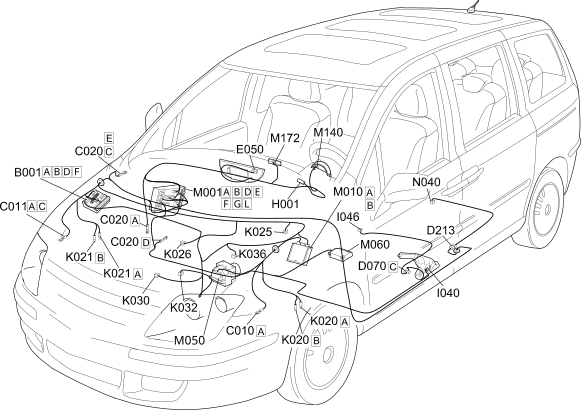

E4010 INSTRUMENT PANEL COMPONENT LOCATION
- Path
- Electrical equipment > 1 ELECTRICAL FUNCTIONS > E40 INSTRUMENT PANEL > E4010 INSTRUMENT PANEL > E4010 INSTRUMENT PANEL COMPONENT LOCATION
- Kind
- topic
- Applies to
- engines: 2.0 16V JTD, 2.2 16V JTD; all production periods; only with equipment: MY 2005
- Interactive page
- https://sloeber94.github.io/elrnDB-fUlss/en/#/179011596
Applies to: engines: 2.0 16V JTD, 2.2 16V JTD; all production periods; only with equipment: MY 2005

Component code | Description | Reference to the assembly |
|---|---|---|
ENGINE COMPARTMENT JUNCTION UNIT | ||
LEFT FRONT EARTH | - | |
RIGHT FRONT EARTH | - | |
PASSENGER SIDE DASHBOARD EARTH | - | |
DRIVER'S SEAT COUPLING | - | |
FUEL TANK COUPLING | - | |
INSTRUMENT PANEL | ||
Ignition switch | ||
HANDBRAKE APPLIED SWITCH | ||
DRIVER'S SEAT BELT SWITCH | - | |
LEFT BRAKE PAD WEAR SENSOR (SWITCH) | ||
RIGHT BRAKE PAD WEAR SENSOR (SWITCH) | ||
BRAKE FLUID LEVEL SENSOR (SWITCH) | - | |
Engine coolant level sensor | - | |
INSUFFICIENT ENGINE OIL PRESSURE SENSOR | ||
ENGINE OIL LEVEL SENSOR | ||
ENGINE COOLANT TEMPERATURE SENSOR/SENDER UNIT | ||
BODY COMPUTER | ||
ENGINE MANAGEMENT CONTROL UNIT | ||
ABS CONTROL UNIT | ||
AIR BAG CONTROL UNIT | ||
WARNING LIGHTS AND MILOMETER CONTROL UNIT (NSO) | - | |
MULTIFUNCTION SCREEN NODE | - | |
FUEL PUMP AND LEVEL GAUGE |
Topics linked from this page (35)
- 1040A FUEL TANK AND COMPONENTS
- 1056B MULTI-POINT INJECTION SYSTEM (MPI)
- 1060G DIESEL INJECTION PRESSURE PUMP ELECTRONIC CONTROL
- 1084A INDICATORS/CHECK DEVICES
- 3310A FRONT DISC BRAKES
- 3340A ABS CHECK/ADJUSTMENT DEVICES
- 5505A MULTI-FUNCTION COMPONENTS
- 5520A IGNITION SWITCH
- 5550D BRAKE AND REVERSING LIGHTS
- 5560B ANALOGUE CONTROL PANEL
- 5580C AIR BAG SYSTEM
- B001 ENGINE COMPARTMENT JUNCTION UNIT
- C010 LEFT FRONT EARTH
- C011 RIGHT FRONT EARTH
- C020 PASSENGER SIDE DASHBOARD EARTH
- D070 DRIVER'S SEAT COUPLING
- D213 FUEL TANK COUPLING
- E050 INSTRUMENT PANEL
- H001 Ignition switch
- I040 HANDBRAKE APPLIED SWITCH
- I046 DRIVER'S SEAT BELT SWITCH
- K020 LEFT BRAKE PAD WEAR SENSOR (SWITCH)
- K021 RIGHT BRAKE PAD WEAR SENSOR (SWITCH)
- K025 BRAKE FLUID LEVEL SENSOR (SWITCH)
- K026 Engine coolant level sensor
- K030 INSUFFICIENT ENGINE OIL PRESSURE SENSOR
- K032 ENGINE OIL LEVEL SENSOR
- K036 ENGINE COOLANT TEMPERATURE SENSOR/SENDER UNIT
- M001 BODY COMPUTER
- M010 ENGINE MANAGEMENT CONTROL UNIT
- M050 ABS CONTROL UNIT
- M060 AIR BAG CONTROL UNIT
- M140 WARNING LIGHTS AND MILOMETER CONTROL UNIT (NSO)
- M172 MULTIFUNCTION SCREEN NODE
- N040 FUEL PUMP AND LEVEL GAUGE